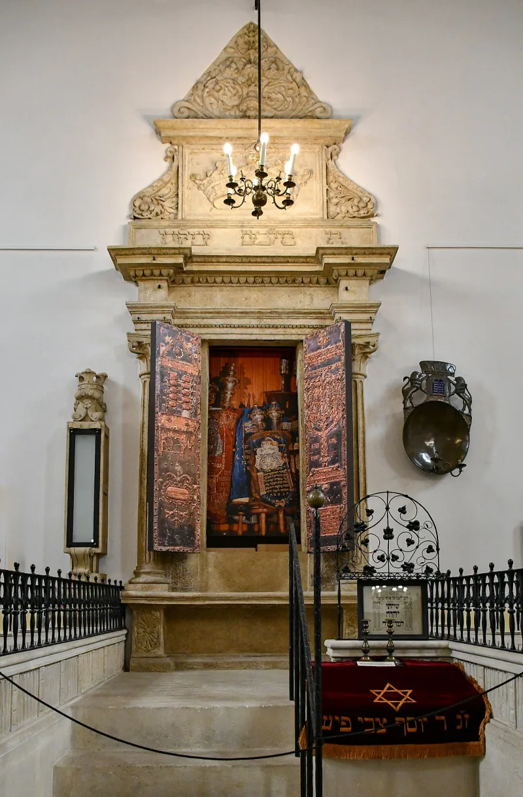
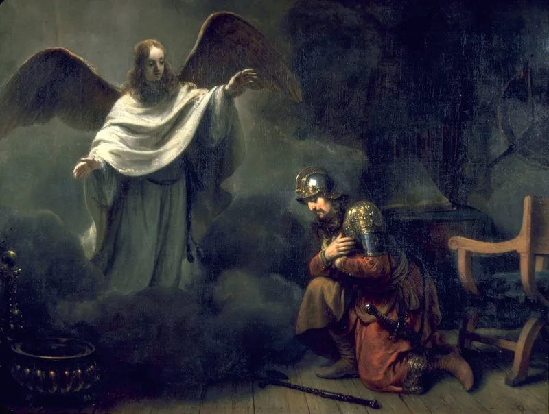

The text settles it — but concede the grievance first, or nothing will be heard.
Not race. This.
The movement makes descent the gate: you must be of the tribes to be saved. Everything else is downstream of that.
He takes up exactly this question. Galatians 3:7 — "they which are of faith, the same are the children of Abraham." Galatians 3:28-29 — "there is neither Jew nor Greek… and if ye be Christ's, then are ye Abraham's seed, and heirs according to the promise."
They are right about something the church has often got wrong. Romans 11:1 asks whether God has cast away his people and answers "God forbid." Jeremiah 31:35-37 stakes Israel's permanence on the sun and moon.
God has not finished with Israel, and any Christian who says otherwise is contradicting his own book.
Paul was arguing against the same mistake running the other way. In his day it was Jewish believers wanting Gentiles kept out.
He wrote a whole letter to stop it.
The text answers this one — but only if you grant the anti-replacement point first and mean it.
"God hasn't cast off Israel — I agree with you there. So why does Galatians 3 say what it says?"


Romans 11:1 says God has not cast away his people, so who Israel is still matters.
This is their strongest theological ground, and it should be stated at full strength.
Romans 11:1 asks 'Hath God then cast away his people?' and answers 'God forbid.' Jeremiah 31:35-37 stakes Israel's permanence on the fixed order of sun, moon and stars. Only if those ordinances depart shall the seed of Israel cease from being a nation. Paul spends Romans 9 through 11 insisting that God's gifts and calling to Israel are without repentance (Romans 11:29).
So Galatians 3:28 addresses standing before God in Christ, they argue. It does not abolish national Israel. Reading it as erasure produces the replacement theology that let the church tell Jews for centuries that they were nobody. If God has not cast off Israel, then who Israel is remains a live and urgent question.
Grant their strongest point first: God has not cast off Israel. Then Galatians 3 settles it.
Answered, but only if the steelman is granted first. On the anti-replacement point they are right, and much of the church has been wrong. God has not cast away His people. Israel's election is irrevocable. Any answer that requires the church to have replaced Israel should be refused.
Grant all of it, and the argument still fails at the joint. That God preserves Israel establishes that Israel continues. It says nothing about which modern population Israel is, and Romans 11:1 grounds the answer in a Benjamite named Paul.
More decisively, nothing in Romans 9 through 11 makes ancestry the condition of salvation. Paul's own summary is that whosoever calls on the name of the Lord shall be saved, for there is no difference between Jew and Greek (Romans 10:12-13). This is where the pastoral answer lands. Adoption (Romans 8:15-17; Galatians 4:4-7) offers by grace the belonging the movement is trying to prove by genealogy.